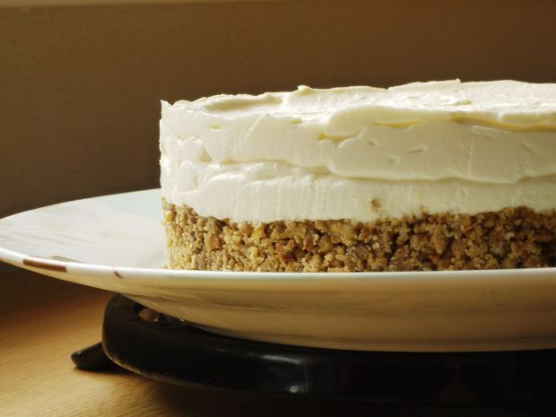

How to Make Cheesecake

What you Need
Ingredients
For the cheesecake
- 5 8oz cream cheeses
- 2 cups sugar
- 5 eggs
- 1 teaspoon of vanilla extract
For the crust
- 12 whole graham cracker rectangles
- 5 tablespoons melted butter, plus extra to grease the pan
Equipment
- 9in springform pan
- aluminum foil
- food processor
- stand mixer
- measuring utensils
- spatula
Instructions
- Preheat the oven and bring cream cheese and eggs to room temperature:Unwrap the cream cheeses out of their boxes and let them come to room temperature for about 2 hours. Bring eggs to room temperature for about 2 hours too. Preheat the oven to 325oF with the rack in the middle position after the 2 hours.
- Prepare pan:Wrap bottom of springform pan with foil
- Process graham crackers: Place graham crackers in food processor and process till it turns to crumbs. Add to prepared springform pan. Take melted butter and mix in with the crumbs. The mixture should look like wet sand and hold together in a clump when you press into it, if not add more melted butter alittle bit at a time.
- Create crust:Take bottom of cup and press crumbs evenly into the bottom of the pan
- Mix the cream cheese and sugar:Combine the room temperature cream cheese and sugar in the bowl of the mixer. Mix on high speed until the mixture is creamy like thick frosting. Scrape down the sides of the bowl with a spatuala periodically. Mix for 3 mins. Add the vanilla extract and mix till combined.
- Mix in the eggs:With the mixer on low speed, beat in the eggs one at a time. Wait until the previous egg is just barely mixed into the batter before adding the next one. the mixture will come together as the eggs are worked in.
- Stir a few times by hand:After the last egg has barely been mixed in, stop and take the bowl off the mixture, scrape down the sides and beater. Stir the whole batter a few times by hand to make sure everything is incorporated. Don't overmix.
- Pour the batter over the prepared crust:Pour batter over the crust, lightly spreading it into an even layer against the sides of the pan.
- Bake the cheesecake:Bake the cheesecake for 1 hour at 325o. The cheesecake is done when the top is slightly puffed and set but the center still jiggles when you tap the oven shelf gently.
- Cool the cheesecake in the oven:Turn off the oven when the cheesecake is done and crack the oven door. Let the cheesecake cool slowly for 1 hour.
- Cool the cheesecake completely:After the hour cooling in the oven, place the cheesecake in the fridge uncovered overnight. This step is crucial for letting hte cheesecake to set and achieving the perfect cheesecake texture.
- Cutting the cheesecake:After the cheesecake has been in the fridge overnight, prepare to cut the cheesecake with a long sharp knife. If your kitchen sink has very hot coming out of it then great, if not then boil some water in a pot. For EVERY slice that you make, you MUST dip the knife in the hot water and make sure there is no leftover cheesecake sticking to it. This is the ONLY way you will get clean precise cuts. The heated metal knife helps melt the cheesecake while it cuts.
- Topping the cheesecake:Top the cheesecake after cutting with fresh fruit, crushed up chocolate candies, coconut, drizzle. etc.
- Serve:Take the cheesecake out of the fridge about 30 mins before you plan to serve it.